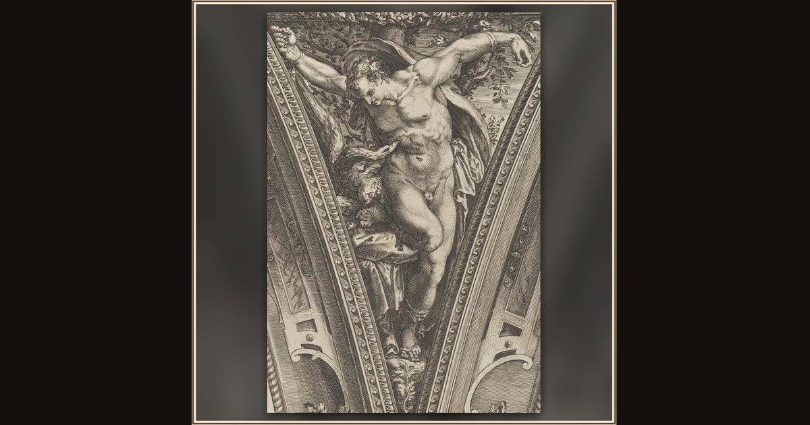

Torture of Prometheus set within a cornice
Cherubino Alberti (Zaccaria Mattia) · 1580 · met
Prometheus is bound beneath a cornice as a bird attacks his body, a later punishment paired here with Protagoras' brief mention of his trial for theft. (322a) Explore its place in Plato's Dialogues, Protagoras, section 65.